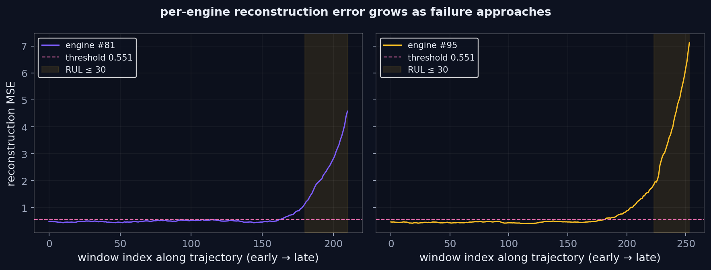
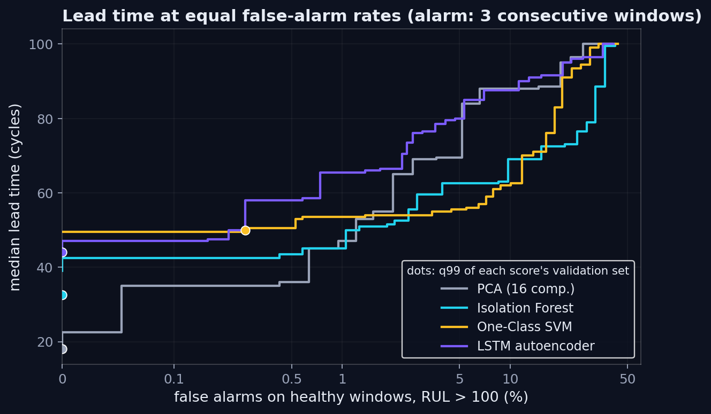

An LSTM autoencoder learns healthy turbofan behaviour from NASA's CMAPSS data and flags degradation by its reconstruction error, measured against simpler detectors with engine-level uncertainty, and served as an API, a demo and a Docker stack.


The trained autoencoder on Hugging Face Spaces: pick a test engine and watch its reconstruction error cross the threshold as it degrades.
First load can take 20–40 s while the Space starts.